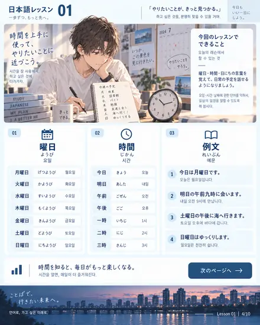
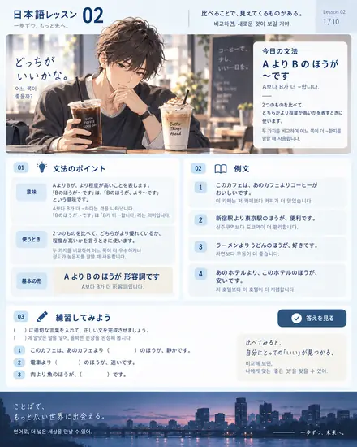
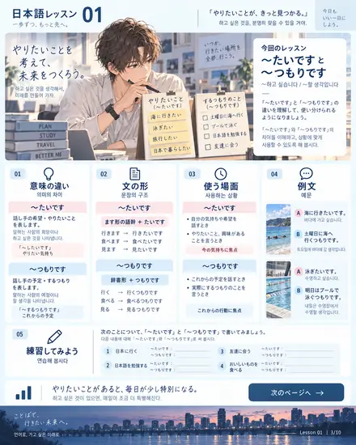
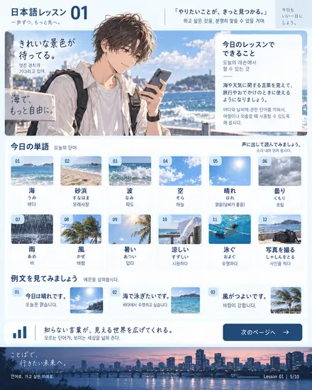
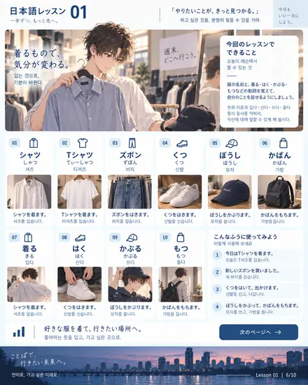

레이아웃 5안 — 하나를 고르세요
팔레트는 그대로, 화면 구조만 다섯 가지로 다르게 짰습니다. 각 화면은 실제 앱 크기(300px)로 그린 것이라 보이는 대로 나옵니다. 번호만 알려주시면 그 안으로 전체를 다시 만듭니다.
1
Lesson first
교재형 — 과가 최상위
탭을 유형(문법·단어·한자)이 아니라 과로 나눕니다. LESSON 01을 열면 그 과의 자료 10장·문법·단어·한자·회화·퀴즈가 한 줄기로 이어집니다. 수업 한 번 = 화면 하나.
장점수업 흐름 그대로. 복습 단위가 명확.
단점“전체 단어 159개”를 한 번에 보기 어려움.
추천도8 / 10· 수업 직후 복습에 가장 자연스러움
9:41일본어
1과2과3과전체
LESSON 01 · 2026.08.25
희망과 계획 말하기
～たいです・～つもりです

이 과의 문법 3
① ～たいです
② ～つもりです
③ 조사 に·で·を
② ～つもりです
③ 조사 に·で·を
이 과의 단어 0 / 54
이 과 퀴즈 38문제
회화
課수업復복습度진도memo노트
2
Feed
피드형 — 한 줄 스크롤
탭을 없애고 세로 피드 하나로 만듭니다. 문법·단어 묶음·한자 세트·자료·회화가 모두 같은 크기의 카드로 흘러가고, 위쪽 칩으로 걸러 봅니다. 엄지 하나로 끝.
장점이동 0회. 출퇴근·대기 시간에 최적.
단점원하는 항목으로 바로 점프가 어려움.
추천도6 / 10· 가볍지만 자료 찾기가 불편
9:41일본어
전체1과단어자료
문법 L1
動詞ます形 ＋ たいです
희망을 말하는 기본형

🌊
海
うみ · 바다
L1
퀴즈 한 문제
人々が 海＿ 泳ぎます。
で
に
を
다음 할 일 →
3
Hub
허브형 — 표지 + 타일
첫 화면은 과 표지 3장(자료 첫 장이 표지)과 진도 링. 과를 열면 2×3 타일(문법·단어·한자·회화·퀴즈·자료)이 나오고, 타일에서 내용으로 들어갑니다.
장점한 화면에 정보가 적어 눈이 편함. 자료가 표지로 살아남.
단점원하는 곳까지 탭 2~3번.
추천도7 / 10· 보기 좋지만 손이 더 감
9:41일본어
홈 · 오늘 15분
62%
단어 98 · 한자 91 · 퀴즈 최고 84%
다음: 3과 한자
다음: 3과 한자
L1
L2文
문법
14
語
단어
159
漢
한자
148
home홈課수업問퀴즈度진도memo노트
4
Sheet led
자료 중심형 — 자료가 곧 화면
자료 30장이 주인공이 됩니다. 위쪽 필름 스트립으로 장을 넘기고, 각 장 아래에 그 장에서 나온 것만 붙습니다 — 그 장의 단어 카드, 그 장 5문제 미니 퀴즈, 그 장의 정정 메모.
장점“그림이 앱의 일부가 아니다”는 문제가 구조적으로 사라짐.
단점전체 단어·전체 퀴즈는 한 단계 뒤로 밀림.
추천도9 / 10· 지금 불만을 정확히 해결
9:41L1 · 4 / 10





이 장의 단어 16
月曜日げつようび · 월요일카드
이 장 퀴즈 5문제
전체 ▾
이 장의 정정 · 7장 요일 후리가나 오타 (けつ → げつようび)
← 스와이프로 5장 · 6장 →
資자료語단어問퀴즈度진도
5
Today
오늘형 — 학습 플랜
첫 화면이 오늘 할 일 5개입니다. 단어 10개, 한자 10자, 자료 1장, 퀴즈 10문제, 회화 1개. 앱이 알아서 약한 곳부터 골라 줍니다. 전체 목록은 두 번째 탭으로.
장점출장·야근에도 하루 10분이 굴러감. 연속일 기록.
단점자유롭게 훑어보기보다 “시키는 대로” 성격.
추천도8 / 10· 꾸준함에는 제일 강함
9:417일 연속 🔥
2026.09.17 · 목요일
오늘 15분
3과 한자가 가장 약합니다
✓단어 10개 완료
3과 한자 10자 4분
자료 L3 · 9장 2분
퀴즈 10문제 5분
회화 소리내어 읽기 3분
어제 틀린 것 · 服 = ふく / 速い(빠르다) ↔ 早い(이르다)
시작하기
이번 주
今오늘全전체資자료度진도memo노트
추천 순위
- 4안 자료 중심형 — 지금 지적하신 “그림이 앱의 일부가 아니다”를 구조로 해결합니다.
- 1안 교재형 — 수업 한 번이 화면 하나. Preply 수업 직후 복습 흐름과 가장 잘 맞습니다.
- 5안 오늘형 — 출장이 잦은 일정에서 학습을 계속 굴리는 데 가장 강합니다.
- 3안 허브형 — 가장 보기 좋지만 탭이 늘어납니다.
- 2안 피드형 — 가볍지만 자료 30장을 다루기엔 찾기가 불편합니다.
제 선택: 4안 + 1안 결합. 자료 스트립을 화면의 중심에 두되(4안), 그 위 단계를 과로 묶습니다(1안). 그러면 “LESSON 02 → 7장 → 이 장의 한자·퀴즈”가 한 줄기로 이어지고, 전체 단어·전체 퀴즈는 두 번째 탭에 그대로 남습니다.